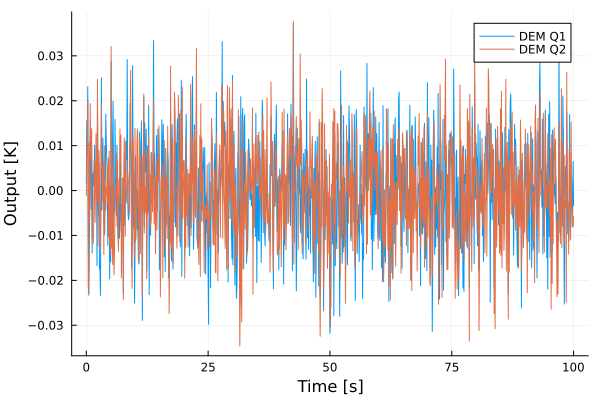

Generating realistic noise
Any detector introduces noise in its measurements, and this is often one of the limiting factors in achieving the goal accuracy for an experiment. Microwave receivers are no exception to this rule, and thus Stripeline provides tools to inject pseudo-random noise in the TODs.
The noise that we observe in detectors is usually made of several components:
- Intrinsic noise produced mostly from the amplifiers; this noise is usually the superposition of classic Gaussian noise and correlated noise, usually called $1/f$ noise.
- White noise caused by any thermal load between the sky (e.g., the atmosphere) and the detector.
- Noise produced by other receivers and entering another because of poor insulation across the focal plane and the electronic boards.
Stripeline provides a set of tools that are able to inject realistic noise into the TODs; these functions are aware of the observed correlations between receivers and can simulate them.
Generating white noise
This section assumes that you read and understood Ch. Time-ordered data (TOD), which explains how timelines are allocated and stored in memory.
The function fillnoise! takes a TOD and substitutes each sample with a pseudo-random number following a given statistics. This function can insert correlations between different channels (Q1, Q2, U1, U2) by means of 4×4 covariance matrices that are passed through the first parameter. This function supports MPI natively, which means that you can call it in a MPI script and will generate uncorrelated noise across the MPI processes.
Typically, you will get these matrices from the instrument database (see Ch. The Strip Instrument Database). Let's create an empty TOD:
julia> tod = allocate_tod(StripTod, Float32, 0:0.1:100, ["I3"]) # Simulate receiver I3
TOD(1 polarimeters, 1001 rows/polarimeter, time range from 0.0 to 100.0)
julia> db = InstrumentDB()
InstrumentDB(55 horns, 66 detectors)
julia> fillnoise!(tod) do polname
s = spectrum(db, polname)
# We must return the covariance matrices of the PWR and DEM signals, respectively
(s.pwr_cov_matrix_k2, s.dem_cov_matrix_k2)
end
julia> # Show the noise time stream for Q1 and Q2
plot(
tod.time_range,
demq1(tod, 1),
xlabel = "Time [s]",
ylabel = "Output [K]",
label = "DEM Q1",
);
julia> plot!(tod.time_range, demq2(tod, 1), label = "DEM Q2");
There is an old function, generate_noise_mpi, which can produce $1/f$ noise, but it's being deprecated because it's slow and does not permit to mix noise across channels.
Stripeline.fillnoise! — Functionfillnoise!(covfn_k2, tod::StripTod)Overwrite all the samples in the TOD with white noise so that the covariance matrix of the PWR and DEM signals for each polarimeter is determined by the result of a call to covfn_k2 like the following:
(pwr_cov, dem_cov) = covfn_k2(polarimeter)where polarimeter is one of the values in tod.polarimeters. The two variables pwr_cov and dem_cov must be 4×4 covariance matrices that express the covariance in K² (not in ADU!).
A typical call to fillnoise! will use the instrument database to retrieve the covariance matrices; for instance:
db = Sl.InstrumentDB()
tod = Sl.allocate_tod(Float32, 0.0:0.1:10000.0, ["I3"])
Tmp.fillnoise!(tod) do polname
spec = Sl.spectrum(db, polname)
(spec.pwr_cov_matrix_k2, spec.dem_cov_matrix_k2)
endNo 1/f noise is simulated in this function.